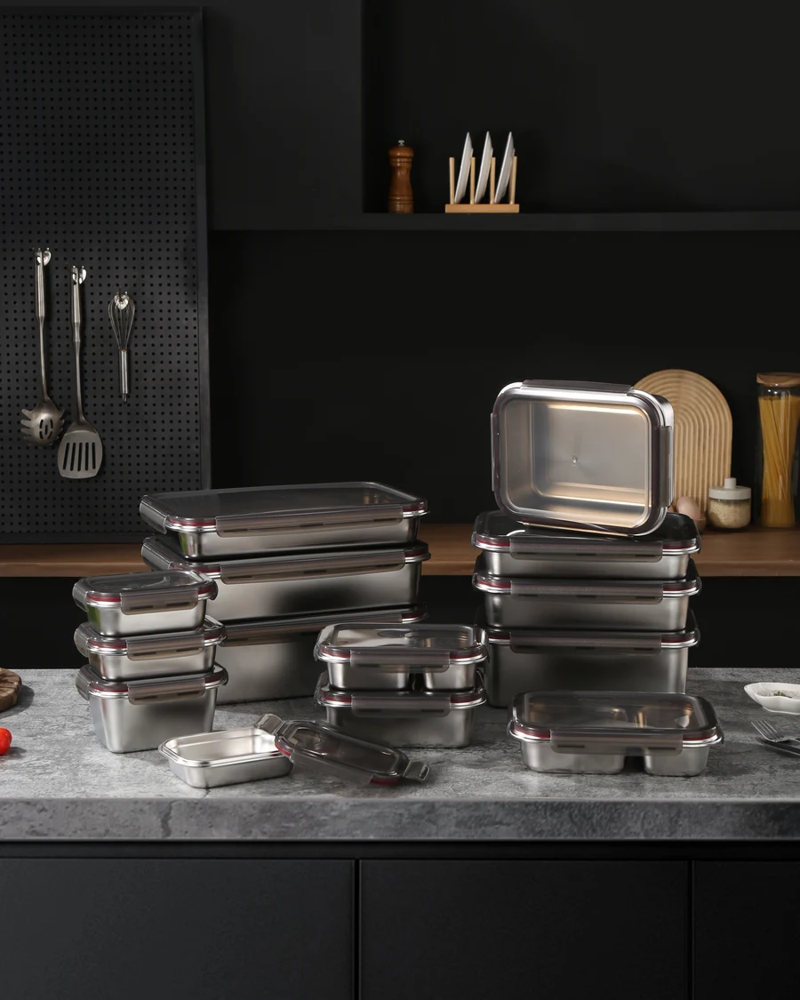
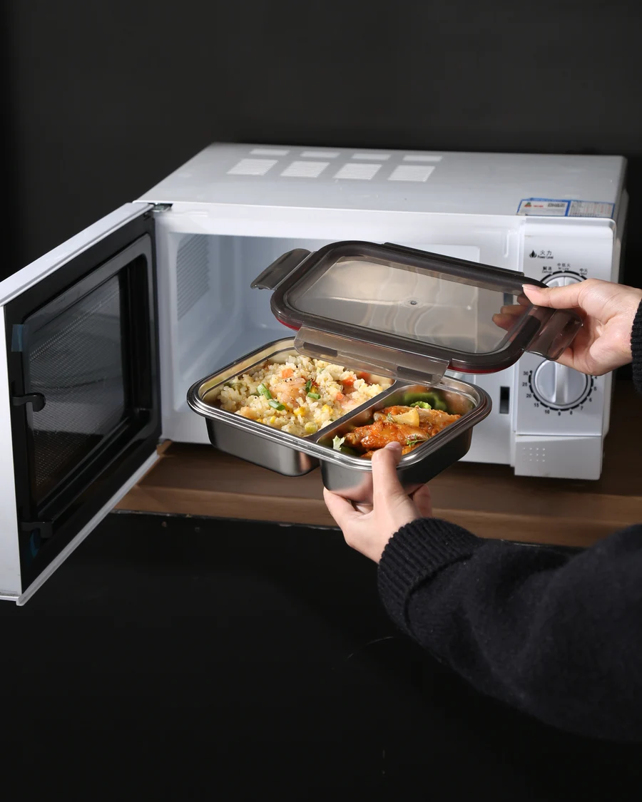
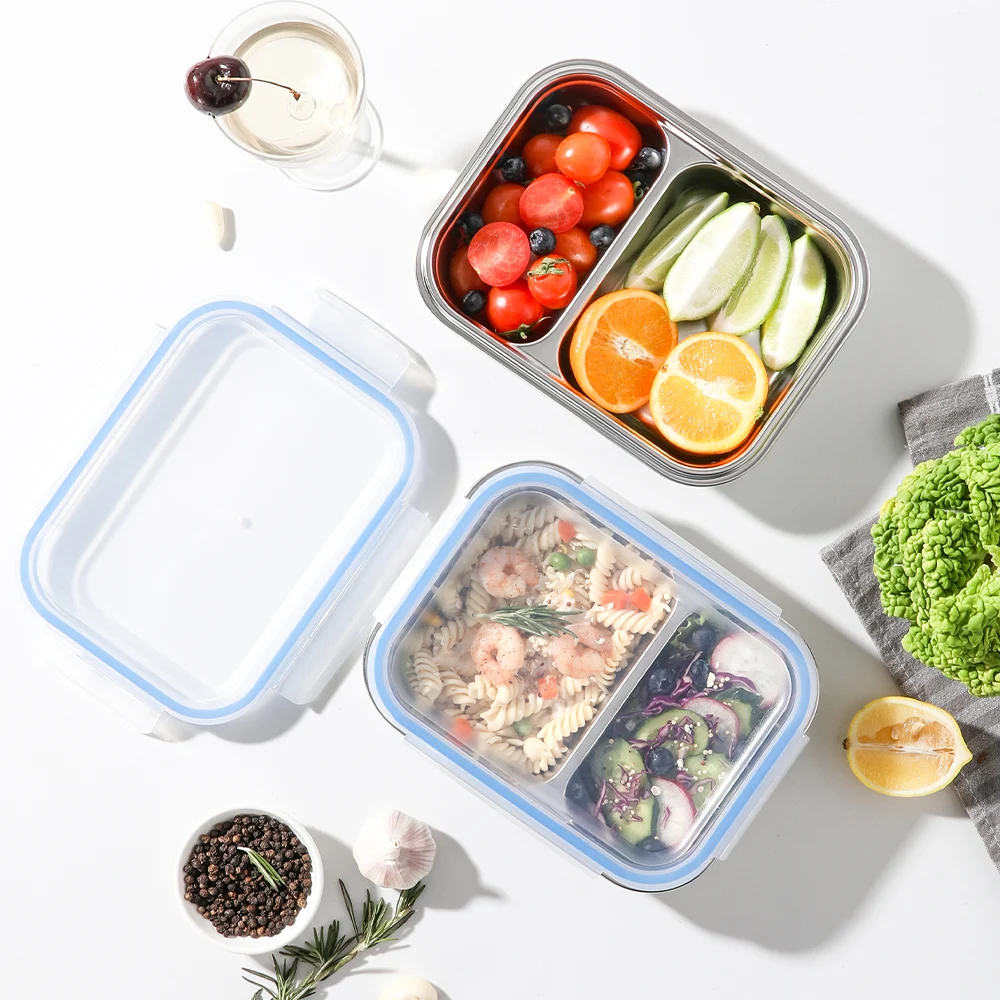
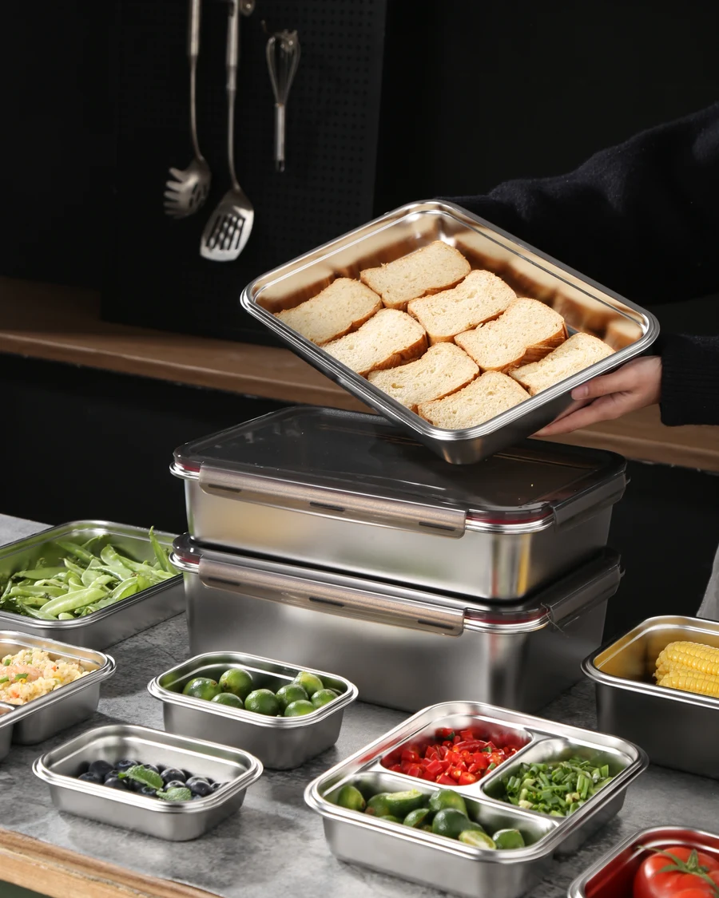
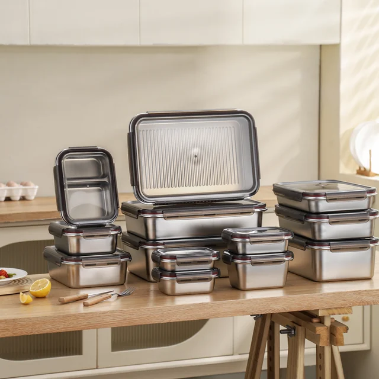
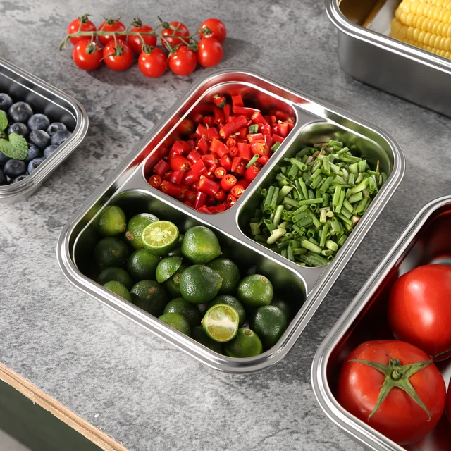
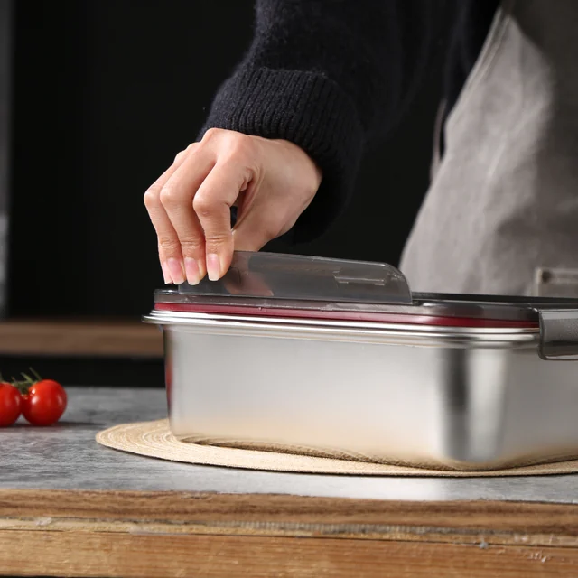
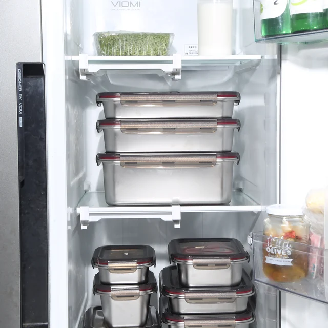
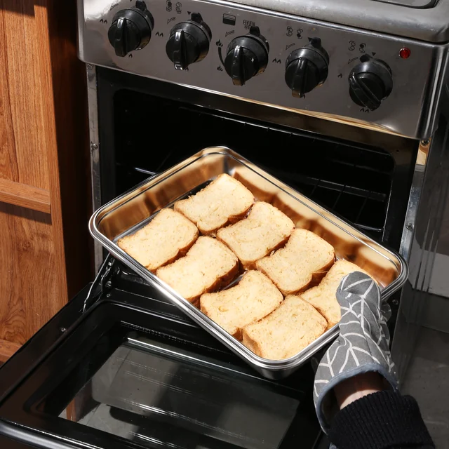
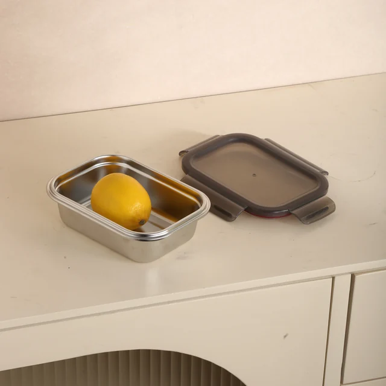

A better meal-prep routine
Lunches, leftovers and tomorrow's ingredients, neatly portioned and ready to go. A choice of sizes makes stainless steel storage easy to fit into everyday cooking.
Meal prep & everyday lunchesStainless steel food storage, from product details to your next order.
We can manufacture container bodies in 201, 304 or 316 stainless steel, as well as titanium, according to your requirements. Tell us your preferred material, product specification and target market, and we will recommend a suitable solution.
The catalog includes rectangular, square, round and divided containers, with capacities from small 280 ml portions to selected 6,600 ml models. Single containers and coordinated sets are available. We can help select a range around your market and target pack size.
We offer PP lids, high-clarity MS lids, silicone-wrapped glass lids and silicone lids. Stainless steel lids are not offered for this range. We can help you select the lid material, appearance and opening style that suit your product range.
Yes. All our food storage containers feature an airtight, leak-proof design. For a reliable seal in everyday use, keep the sealing surfaces clean, fit the gasket correctly and close the lid securely.
Our two-compartment containers come in standard and fully partitioned versions. The fully partitioned version helps keep foods apart and limits mixing to a degree; the standard version does not isolate the compartments.
Three-compartment containers currently come in the standard version only. We can develop a different structure to meet your requirements, and a fully partitioned four-compartment version is currently in development.

Our regular models can be used for microwave reheating, with SGS test reports available. For models without a steam vent, remove the lid before heating.
Microwave-compatible silicone-wrapped glass lid models can be heated as a complete container with the lid in place, following the instructions for that model. Some special models are not suitable for microwave use, so please ask us to confirm the selected model and its lid or venting instructions before use.
Only the stainless steel body may be used in an oven; remove all lids before heating. Keep the body within its specified temperature range. These are food storage containers, not stovetop cookware, and they are not intended for direct-flame heating.
The temperature ranges for the individual materials are:
These are component limits, not a single rating for the assembled container. Remove the lid for oven use. Please ask us for the limits of MS lids or other lid assemblies.
Yes. Our food storage containers can be used in both refrigerators and freezers. Leave space for food and liquids to expand when freezing, and follow the care instructions for the selected model.
Yes. Our products are suitable for dishwasher cleaning. After washing, allow the parts to air-dry thoroughly in a cool, shaded, well-ventilated place before reassembly or storage.
Wash before first use with mild detergent and a soft sponge, then rinse and dry. Avoid abrasive steel wool and chlorine-based cleaners. Clean removable seals separately according to the care instructions, and do not leave salty or acidic food residue on the steel for extended periods.

Yes. All our food storage products are BPA-free.
Yes. We can customize products to meet FDA food-contact requirements and LFGB or DGCCRF requirements, according to your needs. Tell us your destination market and testing requirements so we can align the materials, components and product specification with your program.
Stainless steel bodies are intended for repeated everyday use and do not shatter like glass. They can still scratch or dent, and seals and closures can wear over time. Evaluate the sample for the handling, wash cycles and transport conditions expected in your market.
Selected shapes are designed for stacking when closed; certain sizes also nest when empty. We can confirm the stacking arrangement, nested dimensions and carton layout for your chosen models.

The stainless steel body can carry a laser-engraved logo or a color screen-printed logo. Lids can be laser-engraved, screen-printed or decorated with a color heat-transfer logo.
Both lid colors and silicone gasket colors can be customized. Contact us with your ideas, and we will provide a professional branding and color solution for your range.
We have many years of experience in custom tooling and product development. An initial idea, drawing or physical reference can be the starting point for a product developed around your requirements.
Custom tooling typically takes 30-40 days. For special timing requirements, we will do our best to accommodate an expedited schedule.
The minimum order quantity for all regular models is 1,000 pieces. Share your preferred models, sizes and customization requirements so we can help plan the order.
Samples can be arranged to review the finish, lid fit, sealing and overall handling. We confirm the final details with you before production and again before packaging, so you can entrust the order to our team with confidence.
For every order, one mass-production sample set is available free of charge for your records.
We offer established packaging solutions including blister packs, PP bags, color-printed boxes, kraft boxes, display boxes and supermarket display stands. If you have a different idea or a channel-specific requirement, talk to us and we will work through the packaging solution with you.
Our usual mass-production lead time for regular customized orders is 40-50 days. Timing depends on model availability, order quantity, customization, tooling, packaging and sample approval.
The production schedule and shipping terms are confirmed in your quotation. Send the destination market and target delivery date so we can assess the full timeline.
We welcome customers to arrange a pre-shipment inspection to confirm product quality. We can also provide factory inspection photos and videos.
Our dedicated inspection area and equipment support checks of product dimensions, product weight, outer-carton dimensions, gross weight, leakage performance and freezer performance.

Have a specification to discuss?
Talk to our teamSimple routines. Useful details. A place in the everyday kitchen.






Lunches, leftovers and tomorrow's ingredients, neatly portioned and ready to go. A choice of sizes makes stainless steel storage easy to fit into everyday cooking.
Meal prep & everyday lunchesA smooth stainless steel interior and a satisfying, solid feel. Easy-care surfaces make the clean-up after lunch feel as practical as packing it in the first place.
Everyday care & convenienceA durable alternative to disposable food packaging. From a weekday lunch to the next batch of leftovers, the same container becomes part of the routine.
Long-term use & less single-use packaging